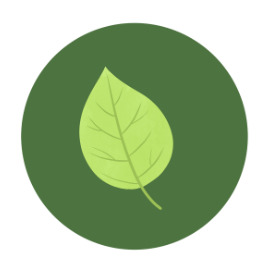
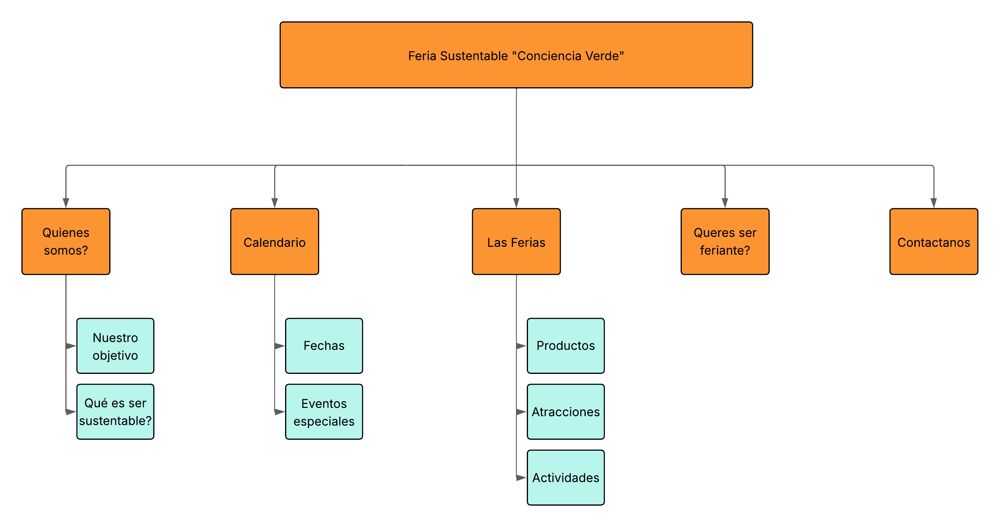

Introducción
Actividad: Feria Itinerante
Objetivo del sitio web: poder mostrar una feria itinerante que sea apta para todo tipo de públicos. La misma va a recorrer diferentes ciudades de una provincia argentina. La idea es que sea atractiva tanto para chicos como para adultos. En la cual se les muestre y enseñe diferentes actividades.
Introducción al Proyecto
El cliente es una organización que promueve la sustentabilidad y desea organizar una feria itinerante que recorra diferentes ciudades de una provincia argentina. La feria está dirigida a familias, jóvenes y cualquier persona interesada en productos y prácticas sustentables.
Actividad principal de la organización.
La organización se dedica a concientizar sobre prácticas ecológicas, el consumo responsable y la adopción de productos sustentables mediante eventos, talleres y actividades comunitarias.
Objetivos del sitio web
- Atraer visitantes a la feria mediante contenido visual e informativo.
- Facilitar la compra de productos y la inscripción en actividades.
- Promover la inclusión con un sitio accesible, intuitivo y responsive.
Concepto general y estrategias de atracción
El sitio web se basa en un diseño natural, ecológico y moderno que transmite los valores de la sustentabilidad. Se utilizarán colores cálidos, tipografías legibles, fotos atractivas y elementos interactivos como mapas, galerías, formularios y recursos multimedia
Análisis del público objetivo
- Familias: Padres de entre 30 y 50 años, con hijos pequeños o adolescentes. Buscan actividades recreativas y educativas.
- Jóvenes: Parejas y grupos de amigos entre 18 y 30 años, interesados en el consumo consciente y la innovación ecológica.
- Personas interesadas en la sustentabilidad: De todas las edades, comprometidas con el medio ambiente y la vida saludable.
Identidad visual:
| Nombre | Color | Código # |
|---|---|---|
| Fondo principal: | #F4F1EE | |
| Color de Énfasis/Botones | #4CAF50 | |
| Texto Principal | #333333 | |
| Color Secundario / Fondos suaves | #DDEEDF | |
| Color de Resalte / Secciones destacadas | #8D6E63 |
- Tipografía: Montserrat
- Logo
- Logo primer opción: 
- Logo segunda opción:
Mapa del sitio

Prototipo
Wireframes de las páginas principales. Enlace al prototipo (Figma, Penpot u otra herramienta): Figma
Organización del equipo
| Rol | Nombre |
|---|---|
| Diseñador UX/UI | Fulchi, Leda - Manno, Santino |
| Maquetador | Cervera, Ignacio |
| Programador | Fulchi, Leda - Manno, Santino |
| Comunicador Web | Sanabria, Rocio |